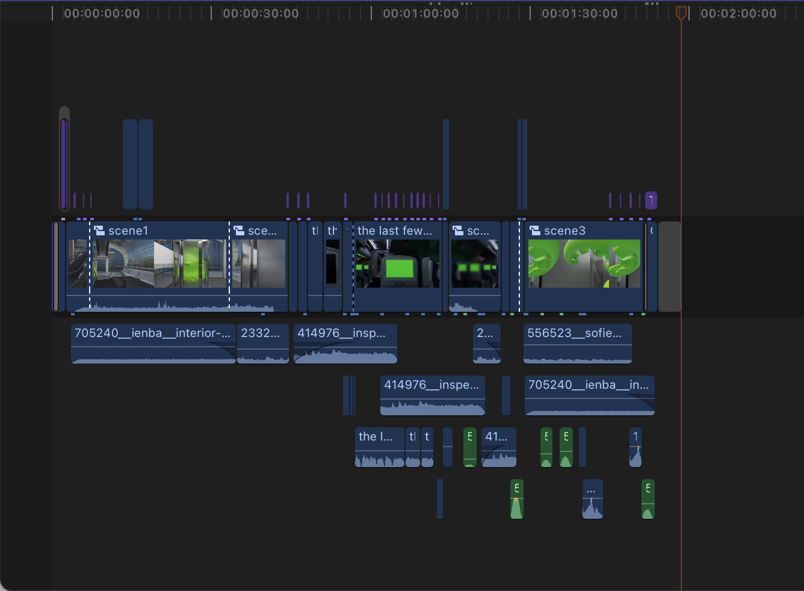

01 Introduction
02 Process


Scene 1: Airport Elevator
- on the escalator— sees octopuses in the elevator— questions reality— dizziness—closes eyes
Scene 2: Boarding
- on the plane — try to put luggage on the locker, but cannot because something is in it already— put it on the other side— plane takes off
- Plane takes off—announcement about there is some weirdness on the airplane—saw octopus in the locker—question reality-dizziness
Scene 3: Transformation
- closes eyes—transforms into octopus(starts to grow tentacles)
- open eyes again and realize they are in the elevator now.

This project unfolds from a first-person perspective, allowing the audience to immerse themselves in the journey of the main character, through a web-based exploration. Different segments of the animation will be divided into bits and pieces in the website, and as the audience engage with clicking different buttons and finding different clues, they will be able to progress through the story.
They will be wearing headphones, providing an auditory experience that simulates the atmosphere of an airport with unique sound effects. Simultaneously, the website's interaction and video's motion will guide the audience through the entire journey, showcasing unexpected twists in life through different plots basing on the audience's decision making.